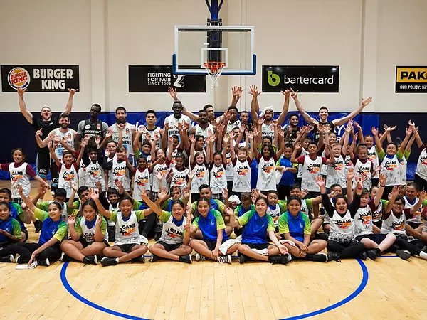
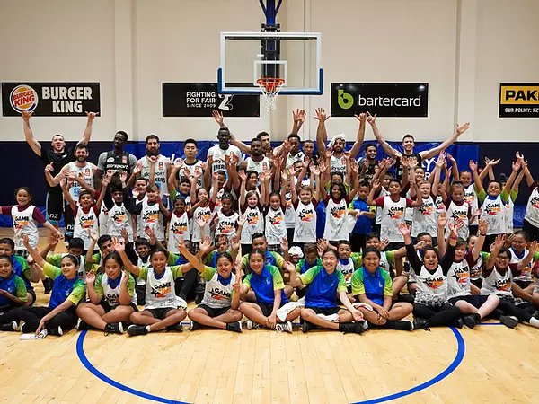

Home
 

The Junior Breakers is a local basketball club in New Zealand. It was founded for the purpose of finding new talents for teir main team,
the Sky Breakers. It is intended for kids from 5-12 years old to join. They take kids of all age and ethnicities.
The Sky Breaker is the premier New Zealand basketball team, which particpates in basketball locally and in Australia.
They recruit people across New Zealand and directly from their fledgeling team, the Junior Breakers